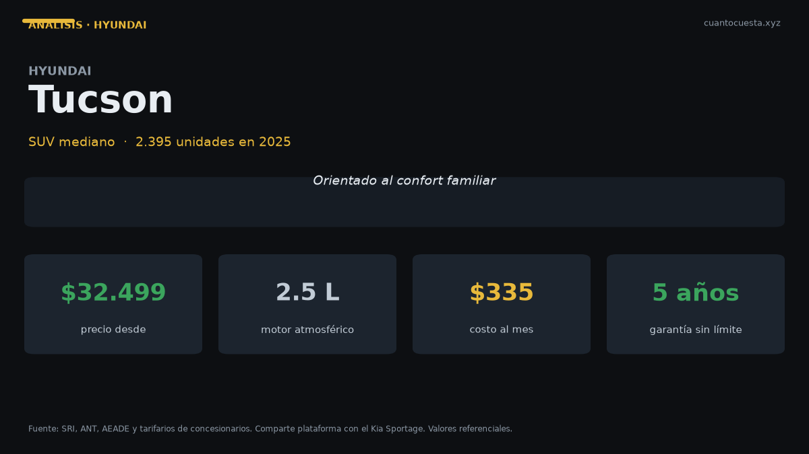

Hyundai Tucson en Ecuador: análisis completo, costos y veredicto
Vendió 2.395 unidades en 2025 y arranca en $32.499. Motor 2.5 L, 6 airbags y garantía de 5 años sin límite de kilometraje. Costos reales y veredicto.

El Hyundai Tucson arranca en $32.499 y llegó a 2.395 unidades en 2025. Es uno de los SUV medianos más fuertes del país, con 6 airbags, motor 2.5 L atmosférico, transmisión automática y una garantía que casi nadie más ofrece igual: 5 años sin límite de kilometraje.
Ese último dato es el argumento de venta más contundente del Tucson en Ecuador. Si haces 30.000 km al año, la mayoría de garantías del mercado te dejan fuera de cobertura por kilometraje en el año tres. Esta no.
Una garantía de 5 años sin límite de kilometraje vale más cuando más manejas. Para quien hace 25.000 km o más al año, es el equivalente a un seguro mecánico gratis durante todo el crédito.
Ficha técnica
| Dato | Hyundai Tucson |
|---|---|
| Segmento | SUV mediano |
| Motor | 2.5 L atmosférico |
| Potencia | No especificado públicamente |
| Torque | No especificado públicamente |
| Transmisión | Automática |
| Consumo homologado | No publicado en las fuentes consultadas |
| Airbags | 6 |
| Plataforma | Compartida con el Kia Sportage |
| Garantía | 5 años sin límite de kilometraje |
| Precio | $32.499 a ~$40.000 |
| Unidades vendidas 2025 | 2.395 |
Dos aclaraciones honestas. Primero: Hyundai no publica potencia ni torque del Tucson 2.5 L en el material que consultamos, así que no damos cifras inventadas. Segundo: el consumo homologado tampoco está publicado, y en un motor de 2.5 L atmosférico ese dato pesa más que en un subcompacto. Pídelo en la agencia.
Precio y versiones en Ecuador
| Versión | Precio de referencia |
|---|---|
| Entrada | $32.499 |
| Tope del rango | ~$40.000 |
Hay cerca de $7.500 de diferencia entre la versión de entrada y la tope. En ese margen se paga equipamiento, acabados, llantas y asistencias. Los precios varían por agencia, ciudad y promoción del mes: en SUV medianos, cotizar en tres concesionarios puede ahorrarte cuatro cifras.
La referencia de segmento es útil: el Kia Sportage, que comparte plataforma, vendió 2.512 unidades frente a las 2.395 del Tucson. Están separados por 117 unidades en todo el año.
Cuánto cuesta mantenerlo
Escenario: 12.000 km al año, vehículo de $32.499 a $40.000, estimación declarada de 11 km/l mixto (el consumo no está publicado). Aquí la variable más grande es el octanaje, así que mostramos los dos escenarios.
| Rubro anual | Si usa Extra ($3,26/gal) | Si usa Súper ($5,61/gal) |
|---|---|---|
| Combustible (estimación 11 km/l) | ~$939 | ~$1.617 |
| Mantenimiento (aceite, filtros, alineación) | $400 – $700 | $400 – $700 |
| Matrícula (IPVM progresivo sobre avalúo alto) | $300 – $550 | $300 – $550 |
| Seguro (≈4% del valor) | $1.300 – $1.600 | $1.300 – $1.600 |
| Llantas (juego cada ~40.000 km) | $200 – $300 | $200 – $300 |
| Otros (lavado, imprevistos) | $100 – $200 | $100 – $200 |
| Total anual | $3.239 – $4.289 | $3.917 – $4.967 |
| Equivalente mensual | $270 – $357 | $326 – $414 |
La decisión del octanaje vale $678 al año. Un motor 2.5 L atmosférico normalmente pide 87 octanos o más, y en Ecuador eso apunta a Súper. Verifica en el manual de tu versión antes de comprar: es el gasto recurrente que más mueve la cuenta.
Nota sobre la matrícula: el IPVM del SRI es progresivo, del 0,5% al 6% sobre el avalúo, y el avalúo se deprecia alrededor del 20% anual con piso del 10% del PVP. En vehículos de más de $32.000, la matrícula está muy por encima del promedio de ~$180 anual de un auto popular.
Precios de taller para comparar: aceite y filtro $50–$90, alineación y balanceo $30–$50, filtro de aire $20–$40, filtro de combustible $30–$60, líquido de frenos $40–$70, bujías $50–$100, pastillas delanteras $80–$150, amortiguadores $200–$350, batería $100–$200, llanta $120–$250, correa de distribución $250–$400.
El mantenimiento anual por marca mueve más que el tamaño del vehículo: Nissan Qashqai o Versa entre $300 y $500; Toyota Hilux o RAV4 entre $300 y $600; Mazda CX-5 entre $500 y $700; Jeep entre $700 y $1.000; RAM 1500 entre $800 y $1.200. Pide el tarifario de los primeros 50.000 km al cotizar.
Equipamiento y seguridad
| Elemento | Hyundai Tucson |
|---|---|
| Airbags | 6 |
| Transmisión automática | Sí |
| Garantía | 5 años sin límite de kilometraje |
| Plataforma | Compartida con el Kia Sportage |
Los 6 airbags y la transmisión automática están confirmados en la ficha. El resto del equipamiento varía por versión y no está detallado en las fuentes consultadas: pide por escrito la lista de la versión específica, sobre todo en asistencias de conducción.
El punto fuerte real es la garantía. Cinco años sin límite de kilometraje es una cobertura poco común en el mercado ecuatoriano: la mayoría de marcas pone topes de 100.000 o 150.000 km. Para un usuario de alto kilometraje, eso cubre el plazo completo del crédito sin importar cuánto maneje.
Para quién es y para quién no
Es para ti si:
- Haces más de 20.000 km al año: la garantía sin límite de kilometraje es tu mayor activo
- Necesitas espacio real para cinco personas y equipaje
- Quieres caja automática y 6 airbags confirmados
- Tu presupuesto de operación arranca en $270 al mes
No es para ti si:
- Tu presupuesto de compra tope está en $25.000: ahí juegan Sonet, Seltos y Groove
- Buscas el menor costo de combustible: un 2.5 L atmosférico no es un auto económico
- Necesitas tracción 4x4 y despeje alto para trabajo: mira camioneta
- Manejas menos de 10.000 km al año: la ventaja de la garantía se diluye
Comparación con su rival directo
| Modelo | Precio | Unidades 2025 | Dato clave |
|---|---|---|---|
| Hyundai Tucson | $32.499 – ~$40.000 | 2.395 | 6 airbags, garantía 5 años sin límite de km |
| Kia Sportage | No especificado públicamente | 2.512 | Misma plataforma, sin restricción de km publicada |
| Kia Seltos | No especificado públicamente | 2.452 | Un escalón abajo en tamaño y precio |
Tucson y Sportage son hermanos de plataforma y vendieron casi lo mismo: 2.395 contra 2.512 unidades. La diferencia real entre ambos es la garantía: el Tucson ofrece 5 años sin límite de kilometraje publicados, mientras la cobertura del Sportage no está especificada en las fuentes consultadas.
Si haces alto kilometraje, ese solo dato puede decidir la compra. Si haces menos de 12.000 km al año, busca el mejor precio cotizado entre los dos: mecánicamente comparten base.
Veredicto
El Hyundai Tucson es el SUV mediano para quien maneja mucho. Arranca en $32.499, ofrece 6 airbags, caja automática y una garantía de 5 años sin límite de kilometraje que casi ninguna otra marca iguala.
Su costo de operación honesto está entre $270 y $414 al mes, dependiendo del octanaje que exija tu versión. Ese es el dato que debes resolver antes de firmar: $678 al año de diferencia.
No es la opción más barata del mercado ni la más económica de mover. Es la de mayor cobertura mecánica para alto kilometraje. Si haces 30.000 km al año, la garantía del Tucson vale más que cualquier descuento.
Precios referenciales de lista a septiembre de 2026. Potencia, torque y consumo del Tucson no están publicados en las fuentes consultadas; los valores de combustible son estimaciones declaradas. Varían por agencia, versión y promoción. No constituye asesoría financiera.
Sigue leyendo
Chery Arrizo en Ecuador: análisis completo, costos y veredicto
Vendió 1.534 unidades en 2025 y Chery creció 50,1% en el primer semestre de 2026. Precio, repue
Chevrolet D-Max en Ecuador: análisis completo, costos y veredicto
Es la camioneta más vendida de Ecuador con 5.515 unidades en 2025. Precio, costo real de operac
Chevrolet Groove en Ecuador: análisis completo, costos y veredicto
El SUV más vendido de Ecuador: 4.063 unidades en 2025. Precio desde $19.999, cuota de $309 al m
GWM Poer en Ecuador: análisis completo, costos y veredicto
La camioneta ensamblada en Ambato que rompió el precio del 4x4: 4.092 unidades en 2025. Precio,
Hyundai Grand i10 en Ecuador: análisis completo, costos y veredicto
Segundo auto de pasajeros más vendido de Ecuador con 1.690 unidades en 2025. Precio desde $13.9
Cómo usamos estos datos
Las cifras de esta guía provienen de fuentes públicas oficiales y tarifarios de concesionarios publicados. Los valores son referenciales: tasas municipales, promociones y precios de repuestos varían. Verifica siempre en la entidad o concesionario antes de decidir.